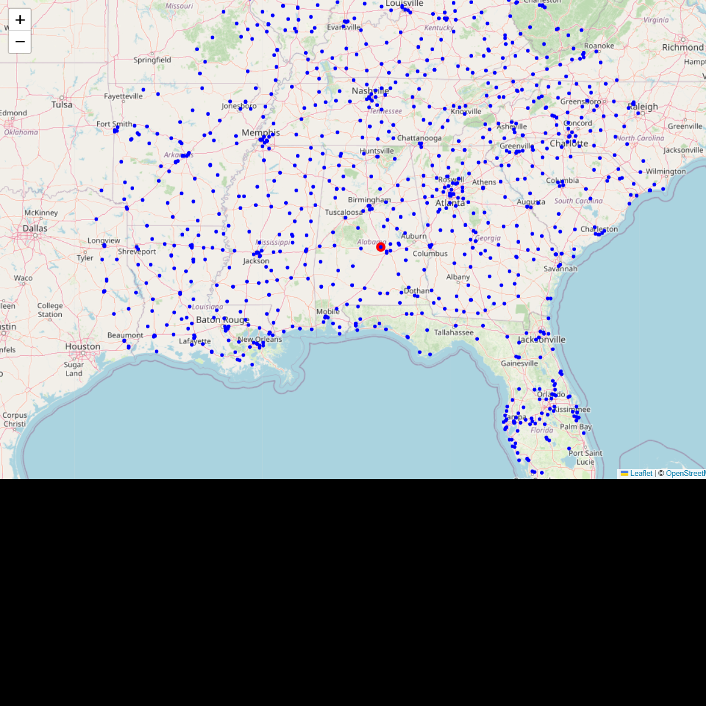
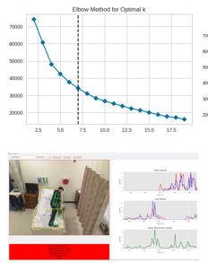
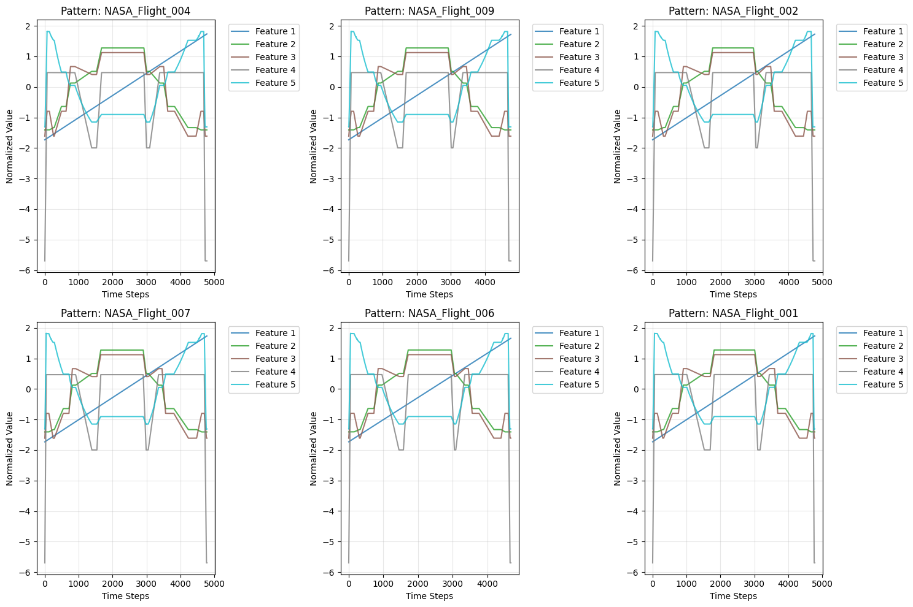
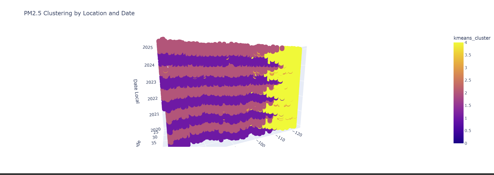
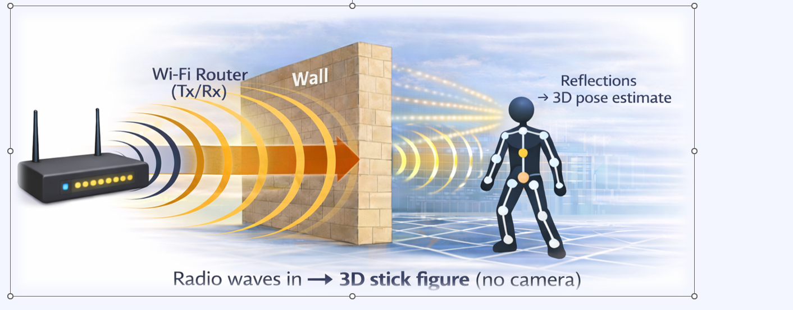

Udaysinh Rahulkumar Rathod

Graduate Research Assistant, Machine Learning Lab • LSU Shreveport
M.S. Computer Systems Technology (GPA 4.0)
About
My research focuses on building intelligent systems for public good, spanning healthcare AI, geospatial analytics, remote sensing, time-series modeling, and NLP systems. As a Graduate Research Assistant in the LSU Shreveport Machine Learning Lab, I drive end-to-end research workflows: from data processing and model development to peer-reviewed writing and scientific dissemination.
Current direction: Trustworthy spatiotemporal learning for climate applications and satellite-based ice modeling; privacy-aware patient safety monitoring using real-time computer vision.
Research Interests
Primary Areas
- Human pose detection, prediction, and real-time fall detection systems
- Geospatial healthcare accessibility modeling (LHA)
- Spatiotemporal learning with satellite and reanalysis data
- Clinical AI for surgical skill assessment and patient safety
Secondary Areas
- Multivariate time-series similarity search (Soft-DTW Siamese networks)
- Remote sensing pipelines and geospatial processing (MODIS HDF)
- Multimodal and multilingual RAG systems (offline, privacy-aware)
- Privacy-preserving computer vision (RF-based 3D reconstruction)
Projects

Locational Health Access (LHA) Modeling
- Developed LHA metric for colorectal cancer access across Louisiana, expanding to national scale.
- Implemented hospital radius optimization and geospatial indexing to reduce computational overhead.

Real-Time Fall Detection & Posture Monitoring
- Built real-time monitoring pipeline using 2D pose estimation with temporal aggregation.
- Extended to surgical skill assessment from video kinematics (lumbar pedicle screw placement).

Hybrid Soft-DTW Siamese Network
- Co-designed Siamese network + Soft-DTW for multivariate pattern matching in sensor streams.
- Demonstrated effectiveness on industrial sequences with learned temporal warping distances.

PM2.5 Prediction from NASA MODIS Data
- Built end-to-end satellite pipeline using MODIS Level-2 data aligned to EPA AQS stations.
- Performed seasonal analysis and predictive modeling of particulate matter concentrations.
Multimodal Multilingual RAG System
- Built offline RAG pipeline with custom chunking strategies and multi-stage ranking.
- Integrated CLIP/MpNet embeddings and LLaMA generation for privacy-aware Q&A.

3D Reconstruction Using Radio Frequencies
- Goal: Depth and coarse pose reconstruction using sub-6 GHz and mmWave without visual data.
- Developing benchmark protocols and releasing code; targeting first-author submission Summer 2026.
Publications
Journal Articles
Kinematic analysis of lumbar pedicle screw placement using an artificial intelligence framework
Real-time Patient Safety System Using Deep Learning for Fall Detection and Clinical Monitoring
Conference Papers
A New Metric for Measuring Locational Health Access for Cancer Treatment
A New Data Driven Approach for Identifying Underserved Areas of Hospitals Accepting Medicare
Direct Prediction of PM2.5 from Raw Satellite Data – A Prospectus
An Algorithm for Feature Based Segmentation of Contiguous Area in a Community to Locate Underserved Areas
PM2.5 Concentration Estimation Using MODIS Optical Data and Meteorological Variables: A Regional Analysis
Posters
An Algorithm for Feature Based Segmentation of Contiguous Area in a Community to Locate Underserved Areas
Experience
Graduate Research Assistant
- Directed project planning, data processing, and ML model development for healthcare and geospatial research.
- Led literature reviews, peer-reviewed writing, poster creation, and technical documentation.
- Collaborated with clinical partners on fall detection and surgical skill assessment systems.
Research Intern
- Designed .NET Core + SQL Server authentication service with role-based access control (RBAC).
- Built offline multimodal RAG system with hybrid retrieval and ranked relevance-based chunking.
- Deployed privacy-aware systems for internal knowledge management and enterprise search.
Skills
Programming Languages
- Python (NumPy, Pandas, PyTorch, TensorFlow)
- SQL (SQL Server, PostgreSQL, spatial queries)
- JavaScript, Dart, Bash
ML & Computer Vision
- PyTorch, TensorFlow, Keras
- OpenCV, MediaPipe, YOLO
- Time-series (DTW, Siamese networks, anomaly detection)
- RAG systems, embedding models (CLIP, MpNet, LLaMA)
Geospatial & Remote Sensing
- GeoPandas, Shapely, GDAL, Rasterio
- OSRM routing, spatial indexing, graph algorithms
- MODIS HDF processing, satellite data pipelines
- Geovisualization (Folium, Plotly, Cartopy)
Systems & Tools
- Git, Docker, CI/CD pipelines
- SQL Server, REST APIs, Jupyter notebooks
- VS Code, Linux command line
- Tableau for data visualization
Data Processing
- Pandas, NumPy, SciPy
- Data cleaning, feature engineering, EDA
- Census data harmonization, EPA integration
Awards & Scholarships
- J.P. Morgan Chase Endowed Scholarship (2025)
- LSU Shreveport Graduate Assistantship (Full tuition waiver)
Contact
Email: rathodu35@lsus.edu
Location: Shreveport, Louisiana